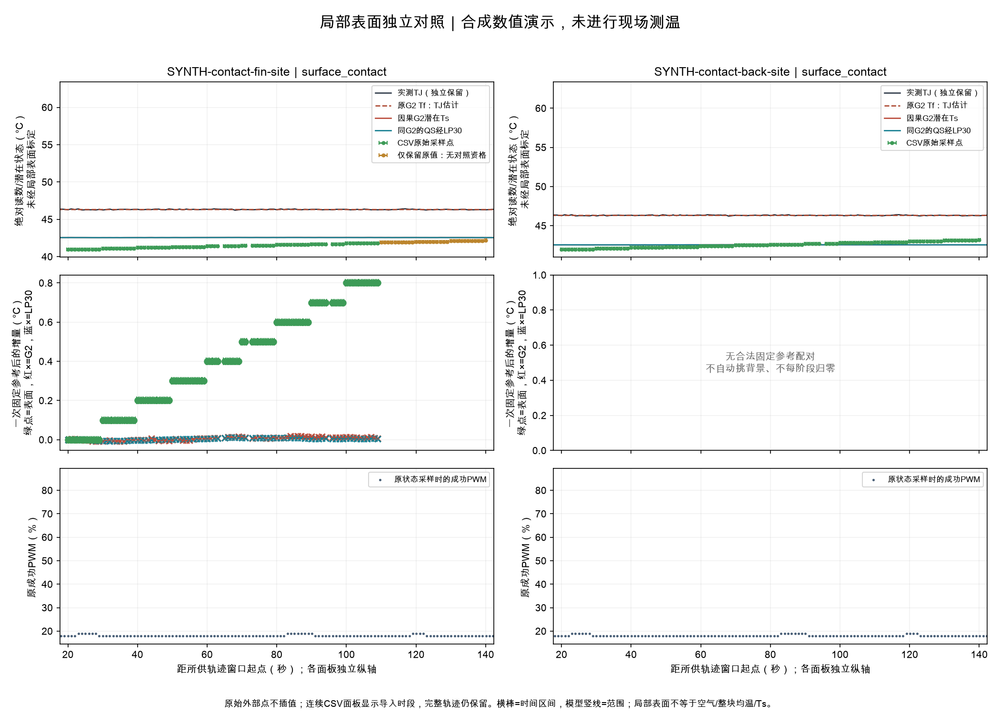

本页所有外部数值是合成演示，没有现场测温。
三种时钟与写入记录分开；普通伪彩图不做数值解码。局部表面不等于Ts，外部点不进入模型；空测温不阻挡其他软件/建模。

| 记录 | 会话/测点 | 被测对象 | 表面读数°C | 原始测量时间 | 配对资格 | 固定参考温升°C | 限制 |
|---|---|---|---|---|---|---|---|
| contact-bg | SYNTH-contact-fin | surface_contact | 41.0 | 0.0 | matched_whole_interval_range | 0.0 | contact_installation_not_field_verified, local_surface_not_air_whole_body_or_measured_Ts, probe_response_not_calibrated_sampling_interval_is_not_response_time, unknown_contact_fixed_position, unknown_contact_surface_condition, unknown_instrument_accuracy |
| contact-B-0 | SYNTH-contact-back | surface_contact | 42.0 | 0.0 | matched_whole_interval_range | — | contact_installation_not_field_verified, local_surface_not_air_whole_body_or_measured_Ts, probe_response_not_calibrated_sampling_interval_is_not_response_time, unknown_contact_surface_condition, unknown_instrument_accuracy |
| contact-A-1 | SYNTH-contact-fin | surface_contact | 41.0 | 1.0 | matched_whole_interval_range | 0.0 | contact_installation_not_field_verified, local_surface_not_air_whole_body_or_measured_Ts, probe_response_not_calibrated_sampling_interval_is_not_response_time, unknown_contact_fixed_position, unknown_contact_surface_condition, unknown_instrument_accuracy |
| contact-B-1 | SYNTH-contact-back | surface_contact | 42.0 | 1.0 | matched_whole_interval_range | — | contact_installation_not_field_verified, local_surface_not_air_whole_body_or_measured_Ts, probe_response_not_calibrated_sampling_interval_is_not_response_time, unknown_contact_surface_condition, unknown_instrument_accuracy |
| contact-A-2 | SYNTH-contact-fin | surface_contact | 41.0 | 2.0 | matched_whole_interval_range | 0.0 | contact_installation_not_field_verified, local_surface_not_air_whole_body_or_measured_Ts, probe_response_not_calibrated_sampling_interval_is_not_response_time, unknown_contact_fixed_position, unknown_contact_surface_condition, unknown_instrument_accuracy |
| contact-B-2 | SYNTH-contact-back | surface_contact | 42.0 | 2.0 | matched_whole_interval_range | — | contact_installation_not_field_verified, local_surface_not_air_whole_body_or_measured_Ts, probe_response_not_calibrated_sampling_interval_is_not_response_time, unknown_contact_surface_condition, unknown_instrument_accuracy |
| contact-A-3 | SYNTH-contact-fin | surface_contact | 41.0 | 3.0 | matched_whole_interval_range | 0.0 | contact_installation_not_field_verified, local_surface_not_air_whole_body_or_measured_Ts, probe_response_not_calibrated_sampling_interval_is_not_response_time, unknown_contact_fixed_position, unknown_contact_surface_condition, unknown_instrument_accuracy |
| contact-B-3 | SYNTH-contact-back | surface_contact | 42.0 | 3.0 | matched_whole_interval_range | — | contact_installation_not_field_verified, local_surface_not_air_whole_body_or_measured_Ts, probe_response_not_calibrated_sampling_interval_is_not_response_time, unknown_contact_surface_condition, unknown_instrument_accuracy |
| contact-A-4 | SYNTH-contact-fin | surface_contact | 41.0 | 4.0 | matched_whole_interval_range | 0.0 | contact_installation_not_field_verified, local_surface_not_air_whole_body_or_measured_Ts, probe_response_not_calibrated_sampling_interval_is_not_response_time, unknown_contact_fixed_position, unknown_contact_surface_condition, unknown_instrument_accuracy |
| contact-B-4 | SYNTH-contact-back | surface_contact | 42.0 | 4.0 | matched_whole_interval_range | — | contact_installation_not_field_verified, local_surface_not_air_whole_body_or_measured_Ts, probe_response_not_calibrated_sampling_interval_is_not_response_time, unknown_contact_surface_condition, unknown_instrument_accuracy |
| contact-A-5 | SYNTH-contact-fin | surface_contact | 41.0 | 5.0 | matched_whole_interval_range | 0.0 | contact_installation_not_field_verified, local_surface_not_air_whole_body_or_measured_Ts, probe_response_not_calibrated_sampling_interval_is_not_response_time, unknown_contact_fixed_position, unknown_contact_surface_condition, unknown_instrument_accuracy |
| contact-B-5 | SYNTH-contact-back | surface_contact | 42.0 | 5.0 | matched_whole_interval_range | — | contact_installation_not_field_verified, local_surface_not_air_whole_body_or_measured_Ts, probe_response_not_calibrated_sampling_interval_is_not_response_time, unknown_contact_surface_condition, unknown_instrument_accuracy |
| contact-A-6 | SYNTH-contact-fin | surface_contact | 41.0 | 6.0 | matched_whole_interval_range | 0.0 | contact_installation_not_field_verified, local_surface_not_air_whole_body_or_measured_Ts, probe_response_not_calibrated_sampling_interval_is_not_response_time, unknown_contact_fixed_position, unknown_contact_surface_condition, unknown_instrument_accuracy |
| contact-B-6 | SYNTH-contact-back | surface_contact | 42.0 | 6.0 | matched_whole_interval_range | — | contact_installation_not_field_verified, local_surface_not_air_whole_body_or_measured_Ts, probe_response_not_calibrated_sampling_interval_is_not_response_time, unknown_contact_surface_condition, unknown_instrument_accuracy |
| contact-A-7 | SYNTH-contact-fin | surface_contact | 41.0 | 7.0 | matched_whole_interval_range | 0.0 | contact_installation_not_field_verified, local_surface_not_air_whole_body_or_measured_Ts, probe_response_not_calibrated_sampling_interval_is_not_response_time, unknown_contact_fixed_position, unknown_contact_surface_condition, unknown_instrument_accuracy |
| contact-B-7 | SYNTH-contact-back | surface_contact | 42.0 | 7.0 | matched_whole_interval_range | — | contact_installation_not_field_verified, local_surface_not_air_whole_body_or_measured_Ts, probe_response_not_calibrated_sampling_interval_is_not_response_time, unknown_contact_surface_condition, unknown_instrument_accuracy |
| contact-A-8 | SYNTH-contact-fin | surface_contact | 41.0 | 8.0 | matched_whole_interval_range | 0.0 | contact_installation_not_field_verified, local_surface_not_air_whole_body_or_measured_Ts, probe_response_not_calibrated_sampling_interval_is_not_response_time, unknown_contact_fixed_position, unknown_contact_surface_condition, unknown_instrument_accuracy |
| contact-B-8 | SYNTH-contact-back | surface_contact | 42.0 | 8.0 | matched_whole_interval_range | — | contact_installation_not_field_verified, local_surface_not_air_whole_body_or_measured_Ts, probe_response_not_calibrated_sampling_interval_is_not_response_time, unknown_contact_surface_condition, unknown_instrument_accuracy |
| contact-A-9 | SYNTH-contact-fin | surface_contact | 41.0 | 9.0 | matched_whole_interval_range | 0.0 | contact_installation_not_field_verified, local_surface_not_air_whole_body_or_measured_Ts, probe_response_not_calibrated_sampling_interval_is_not_response_time, unknown_contact_fixed_position, unknown_contact_surface_condition, unknown_instrument_accuracy |
| contact-B-9 | SYNTH-contact-back | surface_contact | 42.0 | 9.0 | matched_whole_interval_range | — | contact_installation_not_field_verified, local_surface_not_air_whole_body_or_measured_Ts, probe_response_not_calibrated_sampling_interval_is_not_response_time, unknown_contact_surface_condition, unknown_instrument_accuracy |
| contact-A-10 | SYNTH-contact-fin | surface_contact | 41.1 | 10.0 | matched_whole_interval_range | 0.10000000000000142 | contact_installation_not_field_verified, local_surface_not_air_whole_body_or_measured_Ts, probe_response_not_calibrated_sampling_interval_is_not_response_time, unknown_contact_fixed_position, unknown_contact_surface_condition, unknown_instrument_accuracy |
| contact-B-10 | SYNTH-contact-back | surface_contact | 42.1 | 10.0 | matched_whole_interval_range | — | contact_installation_not_field_verified, local_surface_not_air_whole_body_or_measured_Ts, probe_response_not_calibrated_sampling_interval_is_not_response_time, unknown_contact_surface_condition, unknown_instrument_accuracy |
| contact-A-11 | SYNTH-contact-fin | surface_contact | 41.1 | 11.0 | matched_whole_interval_range | 0.10000000000000142 | contact_installation_not_field_verified, local_surface_not_air_whole_body_or_measured_Ts, probe_response_not_calibrated_sampling_interval_is_not_response_time, unknown_contact_fixed_position, unknown_contact_surface_condition, unknown_instrument_accuracy |
| contact-B-11 | SYNTH-contact-back | surface_contact | 42.1 | 11.0 | matched_whole_interval_range | — | contact_installation_not_field_verified, local_surface_not_air_whole_body_or_measured_Ts, probe_response_not_calibrated_sampling_interval_is_not_response_time, unknown_contact_surface_condition, unknown_instrument_accuracy |
| contact-A-12 | SYNTH-contact-fin | surface_contact | 41.1 | 12.0 | matched_whole_interval_range | 0.10000000000000142 | contact_installation_not_field_verified, local_surface_not_air_whole_body_or_measured_Ts, probe_response_not_calibrated_sampling_interval_is_not_response_time, unknown_contact_fixed_position, unknown_contact_surface_condition, unknown_instrument_accuracy |
| contact-B-12 | SYNTH-contact-back | surface_contact | 42.1 | 12.0 | matched_whole_interval_range | — | contact_installation_not_field_verified, local_surface_not_air_whole_body_or_measured_Ts, probe_response_not_calibrated_sampling_interval_is_not_response_time, unknown_contact_surface_condition, unknown_instrument_accuracy |
| contact-A-13 | SYNTH-contact-fin | surface_contact | 41.1 | 13.0 | matched_whole_interval_range | 0.10000000000000142 | contact_installation_not_field_verified, local_surface_not_air_whole_body_or_measured_Ts, probe_response_not_calibrated_sampling_interval_is_not_response_time, unknown_contact_fixed_position, unknown_contact_surface_condition, unknown_instrument_accuracy |
| contact-B-13 | SYNTH-contact-back | surface_contact | 42.1 | 13.0 | matched_whole_interval_range | — | contact_installation_not_field_verified, local_surface_not_air_whole_body_or_measured_Ts, probe_response_not_calibrated_sampling_interval_is_not_response_time, unknown_contact_surface_condition, unknown_instrument_accuracy |
| contact-A-14 | SYNTH-contact-fin | surface_contact | 41.1 | 14.0 | matched_whole_interval_range | 0.10000000000000142 | contact_installation_not_field_verified, local_surface_not_air_whole_body_or_measured_Ts, probe_response_not_calibrated_sampling_interval_is_not_response_time, unknown_contact_fixed_position, unknown_contact_surface_condition, unknown_instrument_accuracy |
| contact-B-14 | SYNTH-contact-back | surface_contact | 42.1 | 14.0 | matched_whole_interval_range | — | contact_installation_not_field_verified, local_surface_not_air_whole_body_or_measured_Ts, probe_response_not_calibrated_sampling_interval_is_not_response_time, unknown_contact_surface_condition, unknown_instrument_accuracy |
| contact-A-15 | SYNTH-contact-fin | surface_contact | 41.1 | 15.0 | matched_whole_interval_range | 0.10000000000000142 | contact_installation_not_field_verified, local_surface_not_air_whole_body_or_measured_Ts, probe_response_not_calibrated_sampling_interval_is_not_response_time, unknown_contact_fixed_position, unknown_contact_surface_condition, unknown_instrument_accuracy |
| contact-B-15 | SYNTH-contact-back | surface_contact | 42.1 | 15.0 | matched_whole_interval_range | — | contact_installation_not_field_verified, local_surface_not_air_whole_body_or_measured_Ts, probe_response_not_calibrated_sampling_interval_is_not_response_time, unknown_contact_surface_condition, unknown_instrument_accuracy |
| contact-A-16 | SYNTH-contact-fin | surface_contact | 41.1 | 16.0 | matched_whole_interval_range | 0.10000000000000142 | contact_installation_not_field_verified, local_surface_not_air_whole_body_or_measured_Ts, probe_response_not_calibrated_sampling_interval_is_not_response_time, unknown_contact_fixed_position, unknown_contact_surface_condition, unknown_instrument_accuracy |
| contact-B-16 | SYNTH-contact-back | surface_contact | 42.1 | 16.0 | matched_whole_interval_range | — | contact_installation_not_field_verified, local_surface_not_air_whole_body_or_measured_Ts, probe_response_not_calibrated_sampling_interval_is_not_response_time, unknown_contact_surface_condition, unknown_instrument_accuracy |
| contact-A-17 | SYNTH-contact-fin | surface_contact | 41.1 | 17.0 | matched_whole_interval_range | 0.10000000000000142 | contact_installation_not_field_verified, local_surface_not_air_whole_body_or_measured_Ts, probe_response_not_calibrated_sampling_interval_is_not_response_time, unknown_contact_fixed_position, unknown_contact_surface_condition, unknown_instrument_accuracy |
| contact-B-17 | SYNTH-contact-back | surface_contact | 42.1 | 17.0 | matched_whole_interval_range | — | contact_installation_not_field_verified, local_surface_not_air_whole_body_or_measured_Ts, probe_response_not_calibrated_sampling_interval_is_not_response_time, unknown_contact_surface_condition, unknown_instrument_accuracy |
| contact-A-18 | SYNTH-contact-fin | surface_contact | 41.1 | 18.0 | matched_whole_interval_range | 0.10000000000000142 | contact_installation_not_field_verified, local_surface_not_air_whole_body_or_measured_Ts, probe_response_not_calibrated_sampling_interval_is_not_response_time, unknown_contact_fixed_position, unknown_contact_surface_condition, unknown_instrument_accuracy |
| contact-B-18 | SYNTH-contact-back | surface_contact | 42.1 | 18.0 | matched_whole_interval_range | — | contact_installation_not_field_verified, local_surface_not_air_whole_body_or_measured_Ts, probe_response_not_calibrated_sampling_interval_is_not_response_time, unknown_contact_surface_condition, unknown_instrument_accuracy |
| contact-A-19 | SYNTH-contact-fin | surface_contact | 41.1 | 19.0 | matched_whole_interval_range | 0.10000000000000142 | contact_installation_not_field_verified, local_surface_not_air_whole_body_or_measured_Ts, probe_response_not_calibrated_sampling_interval_is_not_response_time, unknown_contact_fixed_position, unknown_contact_surface_condition, unknown_instrument_accuracy |
| contact-B-19 | SYNTH-contact-back | surface_contact | 42.1 | 19.0 | matched_whole_interval_range | — | contact_installation_not_field_verified, local_surface_not_air_whole_body_or_measured_Ts, probe_response_not_calibrated_sampling_interval_is_not_response_time, unknown_contact_surface_condition, unknown_instrument_accuracy |
| contact-A-20 | SYNTH-contact-fin | surface_contact | 41.2 | 20.0 | matched_whole_interval_range | 0.20000000000000284 | contact_installation_not_field_verified, local_surface_not_air_whole_body_or_measured_Ts, probe_response_not_calibrated_sampling_interval_is_not_response_time, unknown_contact_fixed_position, unknown_contact_surface_condition, unknown_instrument_accuracy |
| contact-B-20 | SYNTH-contact-back | surface_contact | 42.2 | 20.0 | matched_whole_interval_range | — | contact_installation_not_field_verified, local_surface_not_air_whole_body_or_measured_Ts, probe_response_not_calibrated_sampling_interval_is_not_response_time, unknown_contact_surface_condition, unknown_instrument_accuracy |
| contact-A-21 | SYNTH-contact-fin | surface_contact | 41.2 | 21.0 | matched_whole_interval_range | 0.20000000000000284 | contact_installation_not_field_verified, local_surface_not_air_whole_body_or_measured_Ts, probe_response_not_calibrated_sampling_interval_is_not_response_time, unknown_contact_fixed_position, unknown_contact_surface_condition, unknown_instrument_accuracy |
| contact-B-21 | SYNTH-contact-back | surface_contact | 42.2 | 21.0 | matched_whole_interval_range | — | contact_installation_not_field_verified, local_surface_not_air_whole_body_or_measured_Ts, probe_response_not_calibrated_sampling_interval_is_not_response_time, unknown_contact_surface_condition, unknown_instrument_accuracy |
| contact-A-22 | SYNTH-contact-fin | surface_contact | 41.2 | 22.0 | matched_whole_interval_range | 0.20000000000000284 | contact_installation_not_field_verified, local_surface_not_air_whole_body_or_measured_Ts, probe_response_not_calibrated_sampling_interval_is_not_response_time, unknown_contact_fixed_position, unknown_contact_surface_condition, unknown_instrument_accuracy |
| contact-B-22 | SYNTH-contact-back | surface_contact | 42.2 | 22.0 | matched_whole_interval_range | — | contact_installation_not_field_verified, local_surface_not_air_whole_body_or_measured_Ts, probe_response_not_calibrated_sampling_interval_is_not_response_time, unknown_contact_surface_condition, unknown_instrument_accuracy |
| contact-A-23 | SYNTH-contact-fin | surface_contact | 41.2 | 23.0 | matched_whole_interval_range | 0.20000000000000284 | contact_installation_not_field_verified, local_surface_not_air_whole_body_or_measured_Ts, probe_response_not_calibrated_sampling_interval_is_not_response_time, unknown_contact_fixed_position, unknown_contact_surface_condition, unknown_instrument_accuracy |
| contact-B-23 | SYNTH-contact-back | surface_contact | 42.2 | 23.0 | matched_whole_interval_range | — | contact_installation_not_field_verified, local_surface_not_air_whole_body_or_measured_Ts, probe_response_not_calibrated_sampling_interval_is_not_response_time, unknown_contact_surface_condition, unknown_instrument_accuracy |
| contact-A-24 | SYNTH-contact-fin | surface_contact | 41.2 | 24.0 | matched_whole_interval_range | 0.20000000000000284 | contact_installation_not_field_verified, local_surface_not_air_whole_body_or_measured_Ts, probe_response_not_calibrated_sampling_interval_is_not_response_time, unknown_contact_fixed_position, unknown_contact_surface_condition, unknown_instrument_accuracy |
| contact-B-24 | SYNTH-contact-back | surface_contact | 42.2 | 24.0 | matched_whole_interval_range | — | contact_installation_not_field_verified, local_surface_not_air_whole_body_or_measured_Ts, probe_response_not_calibrated_sampling_interval_is_not_response_time, unknown_contact_surface_condition, unknown_instrument_accuracy |
| contact-A-25 | SYNTH-contact-fin | surface_contact | 41.2 | 25.0 | matched_whole_interval_range | 0.20000000000000284 | contact_installation_not_field_verified, local_surface_not_air_whole_body_or_measured_Ts, probe_response_not_calibrated_sampling_interval_is_not_response_time, unknown_contact_fixed_position, unknown_contact_surface_condition, unknown_instrument_accuracy |
| contact-B-25 | SYNTH-contact-back | surface_contact | 42.2 | 25.0 | matched_whole_interval_range | — | contact_installation_not_field_verified, local_surface_not_air_whole_body_or_measured_Ts, probe_response_not_calibrated_sampling_interval_is_not_response_time, unknown_contact_surface_condition, unknown_instrument_accuracy |
| contact-A-26 | SYNTH-contact-fin | surface_contact | 41.2 | 26.0 | matched_whole_interval_range | 0.20000000000000284 | contact_installation_not_field_verified, local_surface_not_air_whole_body_or_measured_Ts, probe_response_not_calibrated_sampling_interval_is_not_response_time, unknown_contact_fixed_position, unknown_contact_surface_condition, unknown_instrument_accuracy |
| contact-B-26 | SYNTH-contact-back | surface_contact | 42.2 | 26.0 | matched_whole_interval_range | — | contact_installation_not_field_verified, local_surface_not_air_whole_body_or_measured_Ts, probe_response_not_calibrated_sampling_interval_is_not_response_time, unknown_contact_surface_condition, unknown_instrument_accuracy |
| contact-A-27 | SYNTH-contact-fin | surface_contact | 41.2 | 27.0 | matched_whole_interval_range | 0.20000000000000284 | contact_installation_not_field_verified, local_surface_not_air_whole_body_or_measured_Ts, probe_response_not_calibrated_sampling_interval_is_not_response_time, unknown_contact_fixed_position, unknown_contact_surface_condition, unknown_instrument_accuracy |
| contact-B-27 | SYNTH-contact-back | surface_contact | 42.2 | 27.0 | matched_whole_interval_range | — | contact_installation_not_field_verified, local_surface_not_air_whole_body_or_measured_Ts, probe_response_not_calibrated_sampling_interval_is_not_response_time, unknown_contact_surface_condition, unknown_instrument_accuracy |
| contact-A-28 | SYNTH-contact-fin | surface_contact | 41.2 | 28.0 | matched_whole_interval_range | 0.20000000000000284 | contact_installation_not_field_verified, local_surface_not_air_whole_body_or_measured_Ts, probe_response_not_calibrated_sampling_interval_is_not_response_time, unknown_contact_fixed_position, unknown_contact_surface_condition, unknown_instrument_accuracy |
| contact-B-28 | SYNTH-contact-back | surface_contact | 42.2 | 28.0 | matched_whole_interval_range | — | contact_installation_not_field_verified, local_surface_not_air_whole_body_or_measured_Ts, probe_response_not_calibrated_sampling_interval_is_not_response_time, unknown_contact_surface_condition, unknown_instrument_accuracy |
| contact-A-29 | SYNTH-contact-fin | surface_contact | 41.2 | 29.0 | matched_whole_interval_range | 0.20000000000000284 | contact_installation_not_field_verified, local_surface_not_air_whole_body_or_measured_Ts, probe_response_not_calibrated_sampling_interval_is_not_response_time, unknown_contact_fixed_position, unknown_contact_surface_condition, unknown_instrument_accuracy |
| contact-B-29 | SYNTH-contact-back | surface_contact | 42.2 | 29.0 | matched_whole_interval_range | — | contact_installation_not_field_verified, local_surface_not_air_whole_body_or_measured_Ts, probe_response_not_calibrated_sampling_interval_is_not_response_time, unknown_contact_surface_condition, unknown_instrument_accuracy |
| contact-A-30 | SYNTH-contact-fin | surface_contact | 41.3 | 30.0 | matched_whole_interval_range | 0.29999999999999716 | contact_installation_not_field_verified, local_surface_not_air_whole_body_or_measured_Ts, probe_response_not_calibrated_sampling_interval_is_not_response_time, unknown_contact_fixed_position, unknown_contact_surface_condition, unknown_instrument_accuracy |
| contact-B-30 | SYNTH-contact-back | surface_contact | 42.3 | 30.0 | matched_whole_interval_range | — | contact_installation_not_field_verified, local_surface_not_air_whole_body_or_measured_Ts, probe_response_not_calibrated_sampling_interval_is_not_response_time, unknown_contact_surface_condition, unknown_instrument_accuracy |
| contact-A-31 | SYNTH-contact-fin | surface_contact | 41.3 | 31.0 | matched_whole_interval_range | 0.29999999999999716 | contact_installation_not_field_verified, local_surface_not_air_whole_body_or_measured_Ts, probe_response_not_calibrated_sampling_interval_is_not_response_time, unknown_contact_fixed_position, unknown_contact_surface_condition, unknown_instrument_accuracy |
| contact-B-31 | SYNTH-contact-back | surface_contact | 42.3 | 31.0 | matched_whole_interval_range | — | contact_installation_not_field_verified, local_surface_not_air_whole_body_or_measured_Ts, probe_response_not_calibrated_sampling_interval_is_not_response_time, unknown_contact_surface_condition, unknown_instrument_accuracy |
| contact-A-32 | SYNTH-contact-fin | surface_contact | 41.3 | 32.0 | matched_whole_interval_range | 0.29999999999999716 | contact_installation_not_field_verified, local_surface_not_air_whole_body_or_measured_Ts, probe_response_not_calibrated_sampling_interval_is_not_response_time, unknown_contact_fixed_position, unknown_contact_surface_condition, unknown_instrument_accuracy |
| contact-B-32 | SYNTH-contact-back | surface_contact | 42.3 | 32.0 | matched_whole_interval_range | — | contact_installation_not_field_verified, local_surface_not_air_whole_body_or_measured_Ts, probe_response_not_calibrated_sampling_interval_is_not_response_time, unknown_contact_surface_condition, unknown_instrument_accuracy |
| contact-A-33 | SYNTH-contact-fin | surface_contact | 41.3 | 33.0 | matched_whole_interval_range | 0.29999999999999716 | contact_installation_not_field_verified, local_surface_not_air_whole_body_or_measured_Ts, probe_response_not_calibrated_sampling_interval_is_not_response_time, unknown_contact_fixed_position, unknown_contact_surface_condition, unknown_instrument_accuracy |
| contact-B-33 | SYNTH-contact-back | surface_contact | 42.3 | 33.0 | matched_whole_interval_range | — | contact_installation_not_field_verified, local_surface_not_air_whole_body_or_measured_Ts, probe_response_not_calibrated_sampling_interval_is_not_response_time, unknown_contact_surface_condition, unknown_instrument_accuracy |
| contact-A-34 | SYNTH-contact-fin | surface_contact | 41.3 | 34.0 | matched_whole_interval_range | 0.29999999999999716 | contact_installation_not_field_verified, local_surface_not_air_whole_body_or_measured_Ts, probe_response_not_calibrated_sampling_interval_is_not_response_time, unknown_contact_fixed_position, unknown_contact_surface_condition, unknown_instrument_accuracy |
| contact-B-34 | SYNTH-contact-back | surface_contact | 42.3 | 34.0 | matched_whole_interval_range | — | contact_installation_not_field_verified, local_surface_not_air_whole_body_or_measured_Ts, probe_response_not_calibrated_sampling_interval_is_not_response_time, unknown_contact_surface_condition, unknown_instrument_accuracy |
| contact-A-35 | SYNTH-contact-fin | surface_contact | 41.3 | 35.0 | matched_whole_interval_range | 0.29999999999999716 | contact_installation_not_field_verified, local_surface_not_air_whole_body_or_measured_Ts, probe_response_not_calibrated_sampling_interval_is_not_response_time, unknown_contact_fixed_position, unknown_contact_surface_condition, unknown_instrument_accuracy |
| contact-B-35 | SYNTH-contact-back | surface_contact | 42.3 | 35.0 | matched_whole_interval_range | — | contact_installation_not_field_verified, local_surface_not_air_whole_body_or_measured_Ts, probe_response_not_calibrated_sampling_interval_is_not_response_time, unknown_contact_surface_condition, unknown_instrument_accuracy |
| contact-A-36 | SYNTH-contact-fin | surface_contact | 41.3 | 36.0 | matched_whole_interval_range | 0.29999999999999716 | contact_installation_not_field_verified, local_surface_not_air_whole_body_or_measured_Ts, probe_response_not_calibrated_sampling_interval_is_not_response_time, unknown_contact_fixed_position, unknown_contact_surface_condition, unknown_instrument_accuracy |
| contact-B-36 | SYNTH-contact-back | surface_contact | 42.3 | 36.0 | matched_whole_interval_range | — | contact_installation_not_field_verified, local_surface_not_air_whole_body_or_measured_Ts, probe_response_not_calibrated_sampling_interval_is_not_response_time, unknown_contact_surface_condition, unknown_instrument_accuracy |
| contact-A-37 | SYNTH-contact-fin | surface_contact | 41.3 | 37.0 | matched_whole_interval_range | 0.29999999999999716 | contact_installation_not_field_verified, local_surface_not_air_whole_body_or_measured_Ts, probe_response_not_calibrated_sampling_interval_is_not_response_time, unknown_contact_fixed_position, unknown_contact_surface_condition, unknown_instrument_accuracy |
| contact-B-37 | SYNTH-contact-back | surface_contact | 42.3 | 37.0 | matched_whole_interval_range | — | contact_installation_not_field_verified, local_surface_not_air_whole_body_or_measured_Ts, probe_response_not_calibrated_sampling_interval_is_not_response_time, unknown_contact_surface_condition, unknown_instrument_accuracy |
| contact-A-38 | SYNTH-contact-fin | surface_contact | 41.3 | 38.0 | matched_whole_interval_range | 0.29999999999999716 | contact_installation_not_field_verified, local_surface_not_air_whole_body_or_measured_Ts, probe_response_not_calibrated_sampling_interval_is_not_response_time, unknown_contact_fixed_position, unknown_contact_surface_condition, unknown_instrument_accuracy |
| contact-B-38 | SYNTH-contact-back | surface_contact | 42.3 | 38.0 | matched_whole_interval_range | — | contact_installation_not_field_verified, local_surface_not_air_whole_body_or_measured_Ts, probe_response_not_calibrated_sampling_interval_is_not_response_time, unknown_contact_surface_condition, unknown_instrument_accuracy |
| contact-A-39 | SYNTH-contact-fin | surface_contact | 41.3 | 39.0 | matched_whole_interval_range | 0.29999999999999716 | contact_installation_not_field_verified, local_surface_not_air_whole_body_or_measured_Ts, probe_response_not_calibrated_sampling_interval_is_not_response_time, unknown_contact_fixed_position, unknown_contact_surface_condition, unknown_instrument_accuracy |
| contact-B-39 | SYNTH-contact-back | surface_contact | 42.3 | 39.0 | matched_whole_interval_range | — | contact_installation_not_field_verified, local_surface_not_air_whole_body_or_measured_Ts, probe_response_not_calibrated_sampling_interval_is_not_response_time, unknown_contact_surface_condition, unknown_instrument_accuracy |
| contact-A-40 | SYNTH-contact-fin | surface_contact | 41.4 | 40.0 | matched_whole_interval_range | 0.3999999999999986 | contact_installation_not_field_verified, local_surface_not_air_whole_body_or_measured_Ts, probe_response_not_calibrated_sampling_interval_is_not_response_time, unknown_contact_fixed_position, unknown_contact_surface_condition, unknown_instrument_accuracy |
| contact-B-40 | SYNTH-contact-back | surface_contact | 42.4 | 40.0 | matched_whole_interval_range | — | contact_installation_not_field_verified, local_surface_not_air_whole_body_or_measured_Ts, probe_response_not_calibrated_sampling_interval_is_not_response_time, unknown_contact_surface_condition, unknown_instrument_accuracy |
| contact-A-41 | SYNTH-contact-fin | surface_contact | 41.4 | 41.0 | matched_whole_interval_range | 0.3999999999999986 | contact_installation_not_field_verified, local_surface_not_air_whole_body_or_measured_Ts, probe_response_not_calibrated_sampling_interval_is_not_response_time, unknown_contact_fixed_position, unknown_contact_surface_condition, unknown_instrument_accuracy |
| contact-B-41 | SYNTH-contact-back | surface_contact | 42.4 | 41.0 | matched_whole_interval_range | — | contact_installation_not_field_verified, local_surface_not_air_whole_body_or_measured_Ts, probe_response_not_calibrated_sampling_interval_is_not_response_time, unknown_contact_surface_condition, unknown_instrument_accuracy |
| contact-A-42 | SYNTH-contact-fin | surface_contact | 41.4 | 42.0 | matched_whole_interval_range | 0.3999999999999986 | contact_installation_not_field_verified, local_surface_not_air_whole_body_or_measured_Ts, probe_response_not_calibrated_sampling_interval_is_not_response_time, unknown_contact_fixed_position, unknown_contact_surface_condition, unknown_instrument_accuracy |
| contact-B-42 | SYNTH-contact-back | surface_contact | 42.4 | 42.0 | matched_whole_interval_range | — | contact_installation_not_field_verified, local_surface_not_air_whole_body_or_measured_Ts, probe_response_not_calibrated_sampling_interval_is_not_response_time, unknown_contact_surface_condition, unknown_instrument_accuracy |
| contact-A-43 | SYNTH-contact-fin | surface_contact | 41.4 | 43.0 | matched_whole_interval_range | 0.3999999999999986 | contact_installation_not_field_verified, local_surface_not_air_whole_body_or_measured_Ts, probe_response_not_calibrated_sampling_interval_is_not_response_time, unknown_contact_fixed_position, unknown_contact_surface_condition, unknown_instrument_accuracy |
| contact-B-43 | SYNTH-contact-back | surface_contact | 42.4 | 43.0 | matched_whole_interval_range | — | contact_installation_not_field_verified, local_surface_not_air_whole_body_or_measured_Ts, probe_response_not_calibrated_sampling_interval_is_not_response_time, unknown_contact_surface_condition, unknown_instrument_accuracy |
| contact-B-44 | SYNTH-contact-back | surface_contact | 42.4 | 44.0 | matched_whole_interval_range | — | contact_installation_not_field_verified, local_surface_not_air_whole_body_or_measured_Ts, probe_response_not_calibrated_sampling_interval_is_not_response_time, unknown_contact_surface_condition, unknown_instrument_accuracy |
| contact-A-45 | SYNTH-contact-fin | surface_contact | 41.4 | 45.0 | matched_whole_interval_range | 0.3999999999999986 | contact_installation_not_field_verified, local_surface_not_air_whole_body_or_measured_Ts, probe_response_not_calibrated_sampling_interval_is_not_response_time, unknown_contact_fixed_position, unknown_contact_surface_condition, unknown_instrument_accuracy |
| contact-B-45 | SYNTH-contact-back | surface_contact | 42.4 | 45.0 | matched_whole_interval_range | — | contact_installation_not_field_verified, local_surface_not_air_whole_body_or_measured_Ts, probe_response_not_calibrated_sampling_interval_is_not_response_time, unknown_contact_surface_condition, unknown_instrument_accuracy |
| contact-A-46 | SYNTH-contact-fin | surface_contact | 41.4 | 46.0 | matched_whole_interval_range | 0.3999999999999986 | contact_installation_not_field_verified, local_surface_not_air_whole_body_or_measured_Ts, probe_response_not_calibrated_sampling_interval_is_not_response_time, unknown_contact_fixed_position, unknown_contact_surface_condition, unknown_instrument_accuracy |
| contact-B-46 | SYNTH-contact-back | surface_contact | 42.4 | 46.0 | matched_whole_interval_range | — | contact_installation_not_field_verified, local_surface_not_air_whole_body_or_measured_Ts, probe_response_not_calibrated_sampling_interval_is_not_response_time, unknown_contact_surface_condition, unknown_instrument_accuracy |
| contact-A-47 | SYNTH-contact-fin | surface_contact | 41.4 | 47.0 | matched_whole_interval_range | 0.3999999999999986 | contact_installation_not_field_verified, local_surface_not_air_whole_body_or_measured_Ts, probe_response_not_calibrated_sampling_interval_is_not_response_time, unknown_contact_fixed_position, unknown_contact_surface_condition, unknown_instrument_accuracy |
| contact-B-47 | SYNTH-contact-back | surface_contact | 42.4 | 47.0 | matched_whole_interval_range | — | contact_installation_not_field_verified, local_surface_not_air_whole_body_or_measured_Ts, probe_response_not_calibrated_sampling_interval_is_not_response_time, unknown_contact_surface_condition, unknown_instrument_accuracy |
| contact-A-48 | SYNTH-contact-fin | surface_contact | 41.4 | 48.0 | matched_whole_interval_range | 0.3999999999999986 | contact_installation_not_field_verified, local_surface_not_air_whole_body_or_measured_Ts, probe_response_not_calibrated_sampling_interval_is_not_response_time, unknown_contact_fixed_position, unknown_contact_surface_condition, unknown_instrument_accuracy |
| contact-B-48 | SYNTH-contact-back | surface_contact | 42.4 | 48.0 | matched_whole_interval_range | — | contact_installation_not_field_verified, local_surface_not_air_whole_body_or_measured_Ts, probe_response_not_calibrated_sampling_interval_is_not_response_time, unknown_contact_surface_condition, unknown_instrument_accuracy |
| contact-A-49 | SYNTH-contact-fin | surface_contact | 41.4 | 49.0 | matched_whole_interval_range | 0.3999999999999986 | contact_installation_not_field_verified, local_surface_not_air_whole_body_or_measured_Ts, probe_response_not_calibrated_sampling_interval_is_not_response_time, unknown_contact_fixed_position, unknown_contact_surface_condition, unknown_instrument_accuracy |
| contact-B-49 | SYNTH-contact-back | surface_contact | 42.4 | 49.0 | matched_whole_interval_range | — | contact_installation_not_field_verified, local_surface_not_air_whole_body_or_measured_Ts, probe_response_not_calibrated_sampling_interval_is_not_response_time, unknown_contact_surface_condition, unknown_instrument_accuracy |
| contact-A-50 | SYNTH-contact-fin | surface_contact | 41.5 | 50.0 | matched_whole_interval_range | 0.5 | contact_installation_not_field_verified, local_surface_not_air_whole_body_or_measured_Ts, probe_response_not_calibrated_sampling_interval_is_not_response_time, unknown_contact_fixed_position, unknown_contact_surface_condition, unknown_instrument_accuracy |
| contact-B-50 | SYNTH-contact-back | surface_contact | 42.5 | 50.0 | matched_whole_interval_range | — | contact_installation_not_field_verified, local_surface_not_air_whole_body_or_measured_Ts, probe_response_not_calibrated_sampling_interval_is_not_response_time, unknown_contact_surface_condition, unknown_instrument_accuracy |
| contact-A-51 | SYNTH-contact-fin | surface_contact | 41.5 | 51.0 | matched_whole_interval_range | 0.5 | contact_installation_not_field_verified, local_surface_not_air_whole_body_or_measured_Ts, probe_response_not_calibrated_sampling_interval_is_not_response_time, unknown_contact_fixed_position, unknown_contact_surface_condition, unknown_instrument_accuracy |
| contact-B-51 | SYNTH-contact-back | surface_contact | 42.5 | 51.0 | matched_whole_interval_range | — | contact_installation_not_field_verified, local_surface_not_air_whole_body_or_measured_Ts, probe_response_not_calibrated_sampling_interval_is_not_response_time, unknown_contact_surface_condition, unknown_instrument_accuracy |
| contact-A-52 | SYNTH-contact-fin | surface_contact | None | 52.0 | matched_whole_interval_range | — | contact_installation_not_field_verified, local_surface_not_air_whole_body_or_measured_Ts, not_measured, probe_response_not_calibrated_sampling_interval_is_not_response_time, unknown_contact_fixed_position, unknown_contact_surface_condition, unknown_instrument_accuracy |
| contact-B-52 | SYNTH-contact-back | surface_contact | 42.5 | 52.0 | matched_whole_interval_range | — | contact_installation_not_field_verified, local_surface_not_air_whole_body_or_measured_Ts, probe_response_not_calibrated_sampling_interval_is_not_response_time, unknown_contact_surface_condition, unknown_instrument_accuracy |
| contact-A-53 | SYNTH-contact-fin | surface_contact | 41.5 | 53.0 | matched_whole_interval_range | 0.5 | contact_installation_not_field_verified, local_surface_not_air_whole_body_or_measured_Ts, probe_response_not_calibrated_sampling_interval_is_not_response_time, unknown_contact_fixed_position, unknown_contact_surface_condition, unknown_instrument_accuracy |
| contact-B-53 | SYNTH-contact-back | surface_contact | 42.5 | 53.0 | matched_whole_interval_range | — | contact_installation_not_field_verified, local_surface_not_air_whole_body_or_measured_Ts, probe_response_not_calibrated_sampling_interval_is_not_response_time, unknown_contact_surface_condition, unknown_instrument_accuracy |
| contact-A-54 | SYNTH-contact-fin | surface_contact | 41.5 | 54.0 | matched_whole_interval_range | 0.5 | contact_installation_not_field_verified, local_surface_not_air_whole_body_or_measured_Ts, probe_response_not_calibrated_sampling_interval_is_not_response_time, unknown_contact_fixed_position, unknown_contact_surface_condition, unknown_instrument_accuracy |
| contact-B-54 | SYNTH-contact-back | surface_contact | 42.5 | 54.0 | matched_whole_interval_range | — | contact_installation_not_field_verified, local_surface_not_air_whole_body_or_measured_Ts, probe_response_not_calibrated_sampling_interval_is_not_response_time, unknown_contact_surface_condition, unknown_instrument_accuracy |
| contact-A-55 | SYNTH-contact-fin | surface_contact | 41.5 | 55.0 | matched_whole_interval_range | 0.5 | contact_installation_not_field_verified, local_surface_not_air_whole_body_or_measured_Ts, probe_response_not_calibrated_sampling_interval_is_not_response_time, unknown_contact_fixed_position, unknown_contact_surface_condition, unknown_instrument_accuracy |
| contact-B-55 | SYNTH-contact-back | surface_contact | 42.5 | 55.0 | matched_whole_interval_range | — | contact_installation_not_field_verified, local_surface_not_air_whole_body_or_measured_Ts, probe_response_not_calibrated_sampling_interval_is_not_response_time, unknown_contact_surface_condition, unknown_instrument_accuracy |
| contact-A-56 | SYNTH-contact-fin | surface_contact | 41.5 | 56.0 | matched_whole_interval_range | 0.5 | contact_installation_not_field_verified, local_surface_not_air_whole_body_or_measured_Ts, probe_response_not_calibrated_sampling_interval_is_not_response_time, unknown_contact_fixed_position, unknown_contact_surface_condition, unknown_instrument_accuracy |
| contact-B-56 | SYNTH-contact-back | surface_contact | 42.5 | 56.0 | matched_whole_interval_range | — | contact_installation_not_field_verified, local_surface_not_air_whole_body_or_measured_Ts, probe_response_not_calibrated_sampling_interval_is_not_response_time, unknown_contact_surface_condition, unknown_instrument_accuracy |
| contact-A-57 | SYNTH-contact-fin | surface_contact | 41.5 | 57.0 | matched_whole_interval_range | 0.5 | contact_installation_not_field_verified, local_surface_not_air_whole_body_or_measured_Ts, probe_response_not_calibrated_sampling_interval_is_not_response_time, unknown_contact_fixed_position, unknown_contact_surface_condition, unknown_instrument_accuracy |
| contact-B-57 | SYNTH-contact-back | surface_contact | 42.5 | 57.0 | matched_whole_interval_range | — | contact_installation_not_field_verified, local_surface_not_air_whole_body_or_measured_Ts, probe_response_not_calibrated_sampling_interval_is_not_response_time, unknown_contact_surface_condition, unknown_instrument_accuracy |
| contact-A-58 | SYNTH-contact-fin | surface_contact | 41.5 | 58.0 | matched_whole_interval_range | 0.5 | contact_installation_not_field_verified, local_surface_not_air_whole_body_or_measured_Ts, probe_response_not_calibrated_sampling_interval_is_not_response_time, unknown_contact_fixed_position, unknown_contact_surface_condition, unknown_instrument_accuracy |
| contact-B-58 | SYNTH-contact-back | surface_contact | 42.5 | 58.0 | matched_whole_interval_range | — | contact_installation_not_field_verified, local_surface_not_air_whole_body_or_measured_Ts, probe_response_not_calibrated_sampling_interval_is_not_response_time, unknown_contact_surface_condition, unknown_instrument_accuracy |
| contact-A-59 | SYNTH-contact-fin | surface_contact | 41.5 | 59.0 | matched_whole_interval_range | 0.5 | contact_installation_not_field_verified, local_surface_not_air_whole_body_or_measured_Ts, probe_response_not_calibrated_sampling_interval_is_not_response_time, unknown_contact_fixed_position, unknown_contact_surface_condition, unknown_instrument_accuracy |
| contact-B-59 | SYNTH-contact-back | surface_contact | 42.5 | 59.0 | matched_whole_interval_range | — | contact_installation_not_field_verified, local_surface_not_air_whole_body_or_measured_Ts, probe_response_not_calibrated_sampling_interval_is_not_response_time, unknown_contact_surface_condition, unknown_instrument_accuracy |
| contact-A-60 | SYNTH-contact-fin | surface_contact | 41.6 | 60.0 | matched_whole_interval_range | 0.6000000000000014 | contact_installation_not_field_verified, local_surface_not_air_whole_body_or_measured_Ts, probe_response_not_calibrated_sampling_interval_is_not_response_time, unknown_contact_fixed_position, unknown_contact_surface_condition, unknown_instrument_accuracy |
| contact-B-60 | SYNTH-contact-back | surface_contact | 42.6 | 60.0 | matched_whole_interval_range | — | contact_installation_not_field_verified, local_surface_not_air_whole_body_or_measured_Ts, probe_response_not_calibrated_sampling_interval_is_not_response_time, unknown_contact_surface_condition, unknown_instrument_accuracy |
| contact-A-61 | SYNTH-contact-fin | surface_contact | 41.6 | 61.0 | matched_whole_interval_range | 0.6000000000000014 | contact_installation_not_field_verified, local_surface_not_air_whole_body_or_measured_Ts, probe_response_not_calibrated_sampling_interval_is_not_response_time, unknown_contact_fixed_position, unknown_contact_surface_condition, unknown_instrument_accuracy |
| contact-B-61 | SYNTH-contact-back | surface_contact | 42.6 | 61.0 | matched_whole_interval_range | — | contact_installation_not_field_verified, local_surface_not_air_whole_body_or_measured_Ts, probe_response_not_calibrated_sampling_interval_is_not_response_time, unknown_contact_surface_condition, unknown_instrument_accuracy |
| contact-A-62 | SYNTH-contact-fin | surface_contact | 41.6 | 62.0 | matched_whole_interval_range | 0.6000000000000014 | contact_installation_not_field_verified, local_surface_not_air_whole_body_or_measured_Ts, probe_response_not_calibrated_sampling_interval_is_not_response_time, unknown_contact_fixed_position, unknown_contact_surface_condition, unknown_instrument_accuracy |
| contact-B-62 | SYNTH-contact-back | surface_contact | 42.6 | 62.0 | matched_whole_interval_range | — | contact_installation_not_field_verified, local_surface_not_air_whole_body_or_measured_Ts, probe_response_not_calibrated_sampling_interval_is_not_response_time, unknown_contact_surface_condition, unknown_instrument_accuracy |
| contact-A-63 | SYNTH-contact-fin | surface_contact | 41.6 | 63.0 | matched_whole_interval_range | 0.6000000000000014 | contact_installation_not_field_verified, local_surface_not_air_whole_body_or_measured_Ts, probe_response_not_calibrated_sampling_interval_is_not_response_time, unknown_contact_fixed_position, unknown_contact_surface_condition, unknown_instrument_accuracy |
| contact-B-63 | SYNTH-contact-back | surface_contact | 42.6 | 63.0 | matched_whole_interval_range | — | contact_installation_not_field_verified, local_surface_not_air_whole_body_or_measured_Ts, probe_response_not_calibrated_sampling_interval_is_not_response_time, unknown_contact_surface_condition, unknown_instrument_accuracy |
| contact-A-64 | SYNTH-contact-fin | surface_contact | 41.6 | 64.0 | matched_whole_interval_range | 0.6000000000000014 | contact_installation_not_field_verified, local_surface_not_air_whole_body_or_measured_Ts, probe_response_not_calibrated_sampling_interval_is_not_response_time, unknown_contact_fixed_position, unknown_contact_surface_condition, unknown_instrument_accuracy |
| contact-B-64 | SYNTH-contact-back | surface_contact | 42.6 | 64.0 | matched_whole_interval_range | — | contact_installation_not_field_verified, local_surface_not_air_whole_body_or_measured_Ts, probe_response_not_calibrated_sampling_interval_is_not_response_time, unknown_contact_surface_condition, unknown_instrument_accuracy |
| contact-A-65 | SYNTH-contact-fin | surface_contact | 41.6 | 65.0 | matched_whole_interval_range | 0.6000000000000014 | contact_installation_not_field_verified, local_surface_not_air_whole_body_or_measured_Ts, probe_response_not_calibrated_sampling_interval_is_not_response_time, unknown_contact_fixed_position, unknown_contact_surface_condition, unknown_instrument_accuracy |
| contact-B-65 | SYNTH-contact-back | surface_contact | 42.6 | 65.0 | matched_whole_interval_range | — | contact_installation_not_field_verified, local_surface_not_air_whole_body_or_measured_Ts, probe_response_not_calibrated_sampling_interval_is_not_response_time, unknown_contact_surface_condition, unknown_instrument_accuracy |
| contact-A-66 | SYNTH-contact-fin | surface_contact | 41.6 | 66.0 | matched_whole_interval_range | 0.6000000000000014 | contact_installation_not_field_verified, local_surface_not_air_whole_body_or_measured_Ts, probe_response_not_calibrated_sampling_interval_is_not_response_time, unknown_contact_fixed_position, unknown_contact_surface_condition, unknown_instrument_accuracy |
| contact-B-66 | SYNTH-contact-back | surface_contact | 42.6 | 66.0 | matched_whole_interval_range | — | contact_installation_not_field_verified, local_surface_not_air_whole_body_or_measured_Ts, probe_response_not_calibrated_sampling_interval_is_not_response_time, unknown_contact_surface_condition, unknown_instrument_accuracy |
| contact-A-67 | SYNTH-contact-fin | surface_contact | 41.6 | 67.0 | matched_whole_interval_range | 0.6000000000000014 | contact_installation_not_field_verified, local_surface_not_air_whole_body_or_measured_Ts, probe_response_not_calibrated_sampling_interval_is_not_response_time, unknown_contact_fixed_position, unknown_contact_surface_condition, unknown_instrument_accuracy |
| contact-B-67 | SYNTH-contact-back | surface_contact | 42.6 | 67.0 | matched_whole_interval_range | — | contact_installation_not_field_verified, local_surface_not_air_whole_body_or_measured_Ts, probe_response_not_calibrated_sampling_interval_is_not_response_time, unknown_contact_surface_condition, unknown_instrument_accuracy |
| contact-A-68 | SYNTH-contact-fin | surface_contact | 41.6 | 68.0 | matched_whole_interval_range | 0.6000000000000014 | contact_installation_not_field_verified, local_surface_not_air_whole_body_or_measured_Ts, probe_response_not_calibrated_sampling_interval_is_not_response_time, unknown_contact_fixed_position, unknown_contact_surface_condition, unknown_instrument_accuracy |
| contact-B-68 | SYNTH-contact-back | surface_contact | 42.6 | 68.0 | matched_whole_interval_range | — | contact_installation_not_field_verified, local_surface_not_air_whole_body_or_measured_Ts, probe_response_not_calibrated_sampling_interval_is_not_response_time, unknown_contact_surface_condition, unknown_instrument_accuracy |
| contact-A-69 | SYNTH-contact-fin | surface_contact | 41.6 | 69.0 | matched_whole_interval_range | 0.6000000000000014 | contact_installation_not_field_verified, local_surface_not_air_whole_body_or_measured_Ts, probe_response_not_calibrated_sampling_interval_is_not_response_time, unknown_contact_fixed_position, unknown_contact_surface_condition, unknown_instrument_accuracy |
| contact-B-69 | SYNTH-contact-back | surface_contact | 42.6 | 69.0 | matched_whole_interval_range | — | contact_installation_not_field_verified, local_surface_not_air_whole_body_or_measured_Ts, probe_response_not_calibrated_sampling_interval_is_not_response_time, unknown_contact_surface_condition, unknown_instrument_accuracy |
| contact-A-70 | SYNTH-contact-fin | surface_contact | 41.7 | 70.0 | matched_whole_interval_range | 0.7000000000000028 | contact_installation_not_field_verified, local_surface_not_air_whole_body_or_measured_Ts, probe_response_not_calibrated_sampling_interval_is_not_response_time, unknown_contact_fixed_position, unknown_contact_surface_condition, unknown_instrument_accuracy |
| contact-B-70 | SYNTH-contact-back | surface_contact | 42.7 | 70.0 | matched_whole_interval_range | — | contact_installation_not_field_verified, local_surface_not_air_whole_body_or_measured_Ts, probe_response_not_calibrated_sampling_interval_is_not_response_time, unknown_contact_surface_condition, unknown_instrument_accuracy |
| contact-A-71 | SYNTH-contact-fin | surface_contact | 41.7 | 71.0 | matched_whole_interval_range | 0.7000000000000028 | contact_installation_not_field_verified, local_surface_not_air_whole_body_or_measured_Ts, probe_response_not_calibrated_sampling_interval_is_not_response_time, unknown_contact_fixed_position, unknown_contact_surface_condition, unknown_instrument_accuracy |
| contact-B-71 | SYNTH-contact-back | surface_contact | 42.7 | 71.0 | matched_whole_interval_range | — | contact_installation_not_field_verified, local_surface_not_air_whole_body_or_measured_Ts, probe_response_not_calibrated_sampling_interval_is_not_response_time, unknown_contact_surface_condition, unknown_instrument_accuracy |
| contact-A-72 | SYNTH-contact-fin | surface_contact | 41.7 | 72.0 | matched_whole_interval_range | 0.7000000000000028 | contact_installation_not_field_verified, local_surface_not_air_whole_body_or_measured_Ts, probe_response_not_calibrated_sampling_interval_is_not_response_time, unknown_contact_fixed_position, unknown_contact_surface_condition, unknown_instrument_accuracy |
| contact-B-72 | SYNTH-contact-back | surface_contact | 42.7 | 72.0 | matched_whole_interval_range | — | contact_installation_not_field_verified, local_surface_not_air_whole_body_or_measured_Ts, probe_response_not_calibrated_sampling_interval_is_not_response_time, unknown_contact_surface_condition, unknown_instrument_accuracy |
| contact-A-73 | SYNTH-contact-fin | surface_contact | 41.7 | 73.0 | matched_whole_interval_range | 0.7000000000000028 | contact_installation_not_field_verified, local_surface_not_air_whole_body_or_measured_Ts, probe_response_not_calibrated_sampling_interval_is_not_response_time, unknown_contact_fixed_position, unknown_contact_surface_condition, unknown_instrument_accuracy |
| contact-B-73 | SYNTH-contact-back | surface_contact | 42.7 | 73.0 | matched_whole_interval_range | — | contact_installation_not_field_verified, local_surface_not_air_whole_body_or_measured_Ts, probe_response_not_calibrated_sampling_interval_is_not_response_time, unknown_contact_surface_condition, unknown_instrument_accuracy |
| contact-A-74 | SYNTH-contact-fin | surface_contact | 41.7 | 74.0 | matched_whole_interval_range | 0.7000000000000028 | contact_installation_not_field_verified, local_surface_not_air_whole_body_or_measured_Ts, probe_response_not_calibrated_sampling_interval_is_not_response_time, unknown_contact_fixed_position, unknown_contact_surface_condition, unknown_instrument_accuracy |
| contact-B-74 | SYNTH-contact-back | surface_contact | 42.7 | 74.0 | matched_whole_interval_range | — | contact_installation_not_field_verified, local_surface_not_air_whole_body_or_measured_Ts, probe_response_not_calibrated_sampling_interval_is_not_response_time, unknown_contact_surface_condition, unknown_instrument_accuracy |
| contact-A-76 | SYNTH-contact-fin | surface_contact | 41.7 | 76.0 | matched_whole_interval_range | 0.7000000000000028 | contact_installation_not_field_verified, local_surface_not_air_whole_body_or_measured_Ts, probe_response_not_calibrated_sampling_interval_is_not_response_time, unknown_contact_fixed_position, unknown_contact_surface_condition, unknown_instrument_accuracy |
| contact-B-76 | SYNTH-contact-back | surface_contact | 42.7 | 76.0 | matched_whole_interval_range | — | contact_installation_not_field_verified, local_surface_not_air_whole_body_or_measured_Ts, probe_response_not_calibrated_sampling_interval_is_not_response_time, unknown_contact_surface_condition, unknown_instrument_accuracy |
| contact-A-77 | SYNTH-contact-fin | surface_contact | 41.7 | 77.0 | matched_whole_interval_range | 0.7000000000000028 | contact_installation_not_field_verified, local_surface_not_air_whole_body_or_measured_Ts, probe_response_not_calibrated_sampling_interval_is_not_response_time, unknown_contact_fixed_position, unknown_contact_surface_condition, unknown_instrument_accuracy |
| contact-B-77 | SYNTH-contact-back | surface_contact | 42.7 | 77.0 | matched_whole_interval_range | — | contact_installation_not_field_verified, local_surface_not_air_whole_body_or_measured_Ts, probe_response_not_calibrated_sampling_interval_is_not_response_time, unknown_contact_surface_condition, unknown_instrument_accuracy |
| contact-A-78 | SYNTH-contact-fin | surface_contact | 41.7 | 78.0 | matched_whole_interval_range | 0.7000000000000028 | contact_installation_not_field_verified, local_surface_not_air_whole_body_or_measured_Ts, probe_response_not_calibrated_sampling_interval_is_not_response_time, unknown_contact_fixed_position, unknown_contact_surface_condition, unknown_instrument_accuracy |
| contact-B-78 | SYNTH-contact-back | surface_contact | 42.7 | 78.0 | matched_whole_interval_range | — | contact_installation_not_field_verified, local_surface_not_air_whole_body_or_measured_Ts, probe_response_not_calibrated_sampling_interval_is_not_response_time, unknown_contact_surface_condition, unknown_instrument_accuracy |
| contact-A-79 | SYNTH-contact-fin | surface_contact | 41.7 | 79.0 | matched_whole_interval_range | 0.7000000000000028 | contact_installation_not_field_verified, local_surface_not_air_whole_body_or_measured_Ts, probe_response_not_calibrated_sampling_interval_is_not_response_time, unknown_contact_fixed_position, unknown_contact_surface_condition, unknown_instrument_accuracy |
| contact-B-79 | SYNTH-contact-back | surface_contact | 42.7 | 79.0 | matched_whole_interval_range | — | contact_installation_not_field_verified, local_surface_not_air_whole_body_or_measured_Ts, probe_response_not_calibrated_sampling_interval_is_not_response_time, unknown_contact_surface_condition, unknown_instrument_accuracy |
| contact-A-80 | SYNTH-contact-fin | surface_contact | 41.8 | 80.0 | matched_whole_interval_range | 0.7999999999999972 | contact_installation_not_field_verified, local_surface_not_air_whole_body_or_measured_Ts, probe_response_not_calibrated_sampling_interval_is_not_response_time, unknown_contact_fixed_position, unknown_contact_surface_condition, unknown_instrument_accuracy |
| contact-B-80 | SYNTH-contact-back | surface_contact | 42.8 | 80.0 | matched_whole_interval_range | — | contact_installation_not_field_verified, local_surface_not_air_whole_body_or_measured_Ts, probe_response_not_calibrated_sampling_interval_is_not_response_time, unknown_contact_surface_condition, unknown_instrument_accuracy |
| contact-A-81 | SYNTH-contact-fin | surface_contact | 41.8 | 81.0 | matched_whole_interval_range | 0.7999999999999972 | contact_installation_not_field_verified, local_surface_not_air_whole_body_or_measured_Ts, probe_response_not_calibrated_sampling_interval_is_not_response_time, unknown_contact_fixed_position, unknown_contact_surface_condition, unknown_instrument_accuracy |
| contact-B-81 | SYNTH-contact-back | surface_contact | 42.8 | 81.0 | matched_whole_interval_range | — | contact_installation_not_field_verified, local_surface_not_air_whole_body_or_measured_Ts, probe_response_not_calibrated_sampling_interval_is_not_response_time, unknown_contact_surface_condition, unknown_instrument_accuracy |
| contact-A-82 | SYNTH-contact-fin | surface_contact | 41.8 | 82.0 | matched_whole_interval_range | 0.7999999999999972 | contact_installation_not_field_verified, local_surface_not_air_whole_body_or_measured_Ts, probe_response_not_calibrated_sampling_interval_is_not_response_time, unknown_contact_fixed_position, unknown_contact_surface_condition, unknown_instrument_accuracy |
| contact-B-82 | SYNTH-contact-back | surface_contact | 42.8 | 82.0 | matched_whole_interval_range | — | contact_installation_not_field_verified, local_surface_not_air_whole_body_or_measured_Ts, probe_response_not_calibrated_sampling_interval_is_not_response_time, unknown_contact_surface_condition, unknown_instrument_accuracy |
| contact-A-83 | SYNTH-contact-fin | surface_contact | 41.8 | 83.0 | matched_whole_interval_range | 0.7999999999999972 | contact_installation_not_field_verified, local_surface_not_air_whole_body_or_measured_Ts, probe_response_not_calibrated_sampling_interval_is_not_response_time, unknown_contact_fixed_position, unknown_contact_surface_condition, unknown_instrument_accuracy |
| contact-B-83 | SYNTH-contact-back | surface_contact | 42.8 | 83.0 | matched_whole_interval_range | — | contact_installation_not_field_verified, local_surface_not_air_whole_body_or_measured_Ts, probe_response_not_calibrated_sampling_interval_is_not_response_time, unknown_contact_surface_condition, unknown_instrument_accuracy |
| contact-A-84 | SYNTH-contact-fin | surface_contact | 41.8 | 84.0 | matched_whole_interval_range | 0.7999999999999972 | contact_installation_not_field_verified, local_surface_not_air_whole_body_or_measured_Ts, probe_response_not_calibrated_sampling_interval_is_not_response_time, unknown_contact_fixed_position, unknown_contact_surface_condition, unknown_instrument_accuracy |
| contact-B-84 | SYNTH-contact-back | surface_contact | 42.8 | 84.0 | matched_whole_interval_range | — | contact_installation_not_field_verified, local_surface_not_air_whole_body_or_measured_Ts, probe_response_not_calibrated_sampling_interval_is_not_response_time, unknown_contact_surface_condition, unknown_instrument_accuracy |
| contact-A-85 | SYNTH-contact-fin | surface_contact | 41.8 | 85.0 | matched_whole_interval_range | 0.7999999999999972 | contact_installation_not_field_verified, local_surface_not_air_whole_body_or_measured_Ts, probe_response_not_calibrated_sampling_interval_is_not_response_time, unknown_contact_fixed_position, unknown_contact_surface_condition, unknown_instrument_accuracy |
| contact-B-85 | SYNTH-contact-back | surface_contact | 42.8 | 85.0 | matched_whole_interval_range | — | contact_installation_not_field_verified, local_surface_not_air_whole_body_or_measured_Ts, probe_response_not_calibrated_sampling_interval_is_not_response_time, unknown_contact_surface_condition, unknown_instrument_accuracy |
| contact-A-86 | SYNTH-contact-fin | surface_contact | 41.8 | 86.0 | matched_whole_interval_range | 0.7999999999999972 | contact_installation_not_field_verified, local_surface_not_air_whole_body_or_measured_Ts, probe_response_not_calibrated_sampling_interval_is_not_response_time, unknown_contact_fixed_position, unknown_contact_surface_condition, unknown_instrument_accuracy |
| contact-B-86 | SYNTH-contact-back | surface_contact | 42.8 | 86.0 | matched_whole_interval_range | — | contact_installation_not_field_verified, local_surface_not_air_whole_body_or_measured_Ts, probe_response_not_calibrated_sampling_interval_is_not_response_time, unknown_contact_surface_condition, unknown_instrument_accuracy |
| contact-A-87 | SYNTH-contact-fin | surface_contact | 41.8 | 87.0 | matched_whole_interval_range | 0.7999999999999972 | contact_installation_not_field_verified, local_surface_not_air_whole_body_or_measured_Ts, probe_response_not_calibrated_sampling_interval_is_not_response_time, unknown_contact_fixed_position, unknown_contact_surface_condition, unknown_instrument_accuracy |
| contact-B-87 | SYNTH-contact-back | surface_contact | 42.8 | 87.0 | matched_whole_interval_range | — | contact_installation_not_field_verified, local_surface_not_air_whole_body_or_measured_Ts, probe_response_not_calibrated_sampling_interval_is_not_response_time, unknown_contact_surface_condition, unknown_instrument_accuracy |
| contact-A-88 | SYNTH-contact-fin | surface_contact | 41.8 | 88.0 | matched_whole_interval_range | 0.7999999999999972 | contact_installation_not_field_verified, local_surface_not_air_whole_body_or_measured_Ts, probe_response_not_calibrated_sampling_interval_is_not_response_time, unknown_contact_fixed_position, unknown_contact_surface_condition, unknown_instrument_accuracy |
| contact-B-88 | SYNTH-contact-back | surface_contact | 42.8 | 88.0 | matched_whole_interval_range | — | contact_installation_not_field_verified, local_surface_not_air_whole_body_or_measured_Ts, probe_response_not_calibrated_sampling_interval_is_not_response_time, unknown_contact_surface_condition, unknown_instrument_accuracy |
| contact-A-89 | SYNTH-contact-fin | surface_contact | 41.8 | 89.0 | matched_whole_interval_range | 0.7999999999999972 | contact_installation_not_field_verified, local_surface_not_air_whole_body_or_measured_Ts, probe_response_not_calibrated_sampling_interval_is_not_response_time, unknown_contact_fixed_position, unknown_contact_surface_condition, unknown_instrument_accuracy |
| contact-B-89 | SYNTH-contact-back | surface_contact | 42.8 | 89.0 | matched_whole_interval_range | — | contact_installation_not_field_verified, local_surface_not_air_whole_body_or_measured_Ts, probe_response_not_calibrated_sampling_interval_is_not_response_time, unknown_contact_surface_condition, unknown_instrument_accuracy |
| contact-A-90 | SYNTH-contact-fin | surface_contact | 41.9 | 90.0 | probe_integrity_event_requires_new_session | — | contact_installation_not_field_verified, local_surface_not_air_whole_body_or_measured_Ts, probe_response_not_calibrated_sampling_interval_is_not_response_time, unknown_contact_fixed_position, unknown_contact_surface_condition, unknown_instrument_accuracy |
| contact-B-90 | SYNTH-contact-back | surface_contact | 42.9 | 90.0 | matched_whole_interval_range | — | contact_installation_not_field_verified, local_surface_not_air_whole_body_or_measured_Ts, probe_response_not_calibrated_sampling_interval_is_not_response_time, unknown_contact_surface_condition, unknown_instrument_accuracy |
| contact-A-91 | SYNTH-contact-fin | surface_contact | 41.9 | 91.0 | probe_integrity_event_requires_new_session | — | contact_installation_not_field_verified, local_surface_not_air_whole_body_or_measured_Ts, probe_response_not_calibrated_sampling_interval_is_not_response_time, unknown_contact_fixed_position, unknown_contact_surface_condition, unknown_instrument_accuracy |
| contact-B-91 | SYNTH-contact-back | surface_contact | 42.9 | 91.0 | matched_whole_interval_range | — | contact_installation_not_field_verified, local_surface_not_air_whole_body_or_measured_Ts, probe_response_not_calibrated_sampling_interval_is_not_response_time, unknown_contact_surface_condition, unknown_instrument_accuracy |
| contact-A-92 | SYNTH-contact-fin | surface_contact | 41.9 | 92.0 | probe_integrity_event_requires_new_session | — | contact_installation_not_field_verified, local_surface_not_air_whole_body_or_measured_Ts, probe_response_not_calibrated_sampling_interval_is_not_response_time, unknown_contact_fixed_position, unknown_contact_surface_condition, unknown_instrument_accuracy |
| contact-B-92 | SYNTH-contact-back | surface_contact | 42.9 | 92.0 | matched_whole_interval_range | — | contact_installation_not_field_verified, local_surface_not_air_whole_body_or_measured_Ts, probe_response_not_calibrated_sampling_interval_is_not_response_time, unknown_contact_surface_condition, unknown_instrument_accuracy |
| contact-A-93 | SYNTH-contact-fin | surface_contact | 41.9 | 93.0 | probe_integrity_event_requires_new_session | — | contact_installation_not_field_verified, local_surface_not_air_whole_body_or_measured_Ts, probe_response_not_calibrated_sampling_interval_is_not_response_time, unknown_contact_fixed_position, unknown_contact_surface_condition, unknown_instrument_accuracy |
| contact-B-93 | SYNTH-contact-back | surface_contact | 42.9 | 93.0 | matched_whole_interval_range | — | contact_installation_not_field_verified, local_surface_not_air_whole_body_or_measured_Ts, probe_response_not_calibrated_sampling_interval_is_not_response_time, unknown_contact_surface_condition, unknown_instrument_accuracy |
| contact-A-94 | SYNTH-contact-fin | surface_contact | 41.9 | 94.0 | probe_integrity_event_requires_new_session | — | contact_installation_not_field_verified, local_surface_not_air_whole_body_or_measured_Ts, probe_response_not_calibrated_sampling_interval_is_not_response_time, unknown_contact_fixed_position, unknown_contact_surface_condition, unknown_instrument_accuracy |
| contact-B-94 | SYNTH-contact-back | surface_contact | 42.9 | 94.0 | matched_whole_interval_range | — | contact_installation_not_field_verified, local_surface_not_air_whole_body_or_measured_Ts, probe_response_not_calibrated_sampling_interval_is_not_response_time, unknown_contact_surface_condition, unknown_instrument_accuracy |
| contact-A-95 | SYNTH-contact-fin | surface_contact | 41.9 | 95.0 | probe_integrity_event_requires_new_session | — | contact_installation_not_field_verified, local_surface_not_air_whole_body_or_measured_Ts, probe_response_not_calibrated_sampling_interval_is_not_response_time, unknown_contact_fixed_position, unknown_contact_surface_condition, unknown_instrument_accuracy |
| contact-B-95 | SYNTH-contact-back | surface_contact | 42.9 | 95.0 | matched_whole_interval_range | — | contact_installation_not_field_verified, local_surface_not_air_whole_body_or_measured_Ts, probe_response_not_calibrated_sampling_interval_is_not_response_time, unknown_contact_surface_condition, unknown_instrument_accuracy |
| contact-A-96 | SYNTH-contact-fin | surface_contact | 41.9 | 96.0 | probe_integrity_event_requires_new_session | — | contact_installation_not_field_verified, local_surface_not_air_whole_body_or_measured_Ts, probe_response_not_calibrated_sampling_interval_is_not_response_time, unknown_contact_fixed_position, unknown_contact_surface_condition, unknown_instrument_accuracy |
| contact-B-96 | SYNTH-contact-back | surface_contact | 42.9 | 96.0 | matched_whole_interval_range | — | contact_installation_not_field_verified, local_surface_not_air_whole_body_or_measured_Ts, probe_response_not_calibrated_sampling_interval_is_not_response_time, unknown_contact_surface_condition, unknown_instrument_accuracy |
| contact-A-97 | SYNTH-contact-fin | surface_contact | 41.9 | 97.0 | probe_integrity_event_requires_new_session | — | contact_installation_not_field_verified, local_surface_not_air_whole_body_or_measured_Ts, probe_response_not_calibrated_sampling_interval_is_not_response_time, unknown_contact_fixed_position, unknown_contact_surface_condition, unknown_instrument_accuracy |
| contact-B-97 | SYNTH-contact-back | surface_contact | 42.9 | 97.0 | matched_whole_interval_range | — | contact_installation_not_field_verified, local_surface_not_air_whole_body_or_measured_Ts, probe_response_not_calibrated_sampling_interval_is_not_response_time, unknown_contact_surface_condition, unknown_instrument_accuracy |
| contact-A-98 | SYNTH-contact-fin | surface_contact | 41.9 | 98.0 | probe_integrity_event_requires_new_session | — | contact_installation_not_field_verified, local_surface_not_air_whole_body_or_measured_Ts, probe_response_not_calibrated_sampling_interval_is_not_response_time, unknown_contact_fixed_position, unknown_contact_surface_condition, unknown_instrument_accuracy |
| contact-B-98 | SYNTH-contact-back | surface_contact | 42.9 | 98.0 | matched_whole_interval_range | — | contact_installation_not_field_verified, local_surface_not_air_whole_body_or_measured_Ts, probe_response_not_calibrated_sampling_interval_is_not_response_time, unknown_contact_surface_condition, unknown_instrument_accuracy |
| contact-A-99 | SYNTH-contact-fin | surface_contact | 41.9 | 99.0 | probe_integrity_event_requires_new_session | — | contact_installation_not_field_verified, local_surface_not_air_whole_body_or_measured_Ts, probe_response_not_calibrated_sampling_interval_is_not_response_time, unknown_contact_fixed_position, unknown_contact_surface_condition, unknown_instrument_accuracy |
| contact-B-99 | SYNTH-contact-back | surface_contact | 42.9 | 99.0 | matched_whole_interval_range | — | contact_installation_not_field_verified, local_surface_not_air_whole_body_or_measured_Ts, probe_response_not_calibrated_sampling_interval_is_not_response_time, unknown_contact_surface_condition, unknown_instrument_accuracy |
| contact-A-100 | SYNTH-contact-fin | surface_contact | 42.0 | 100.0 | probe_integrity_event_requires_new_session | — | contact_installation_not_field_verified, local_surface_not_air_whole_body_or_measured_Ts, probe_response_not_calibrated_sampling_interval_is_not_response_time, unknown_contact_fixed_position, unknown_contact_surface_condition, unknown_instrument_accuracy |
| contact-B-100 | SYNTH-contact-back | surface_contact | 43.0 | 100.0 | matched_whole_interval_range | — | contact_installation_not_field_verified, local_surface_not_air_whole_body_or_measured_Ts, probe_response_not_calibrated_sampling_interval_is_not_response_time, unknown_contact_surface_condition, unknown_instrument_accuracy |
| contact-A-101 | SYNTH-contact-fin | surface_contact | 42.0 | 101.0 | probe_integrity_event_requires_new_session | — | contact_installation_not_field_verified, local_surface_not_air_whole_body_or_measured_Ts, probe_response_not_calibrated_sampling_interval_is_not_response_time, unknown_contact_fixed_position, unknown_contact_surface_condition, unknown_instrument_accuracy |
| contact-B-101 | SYNTH-contact-back | surface_contact | 43.0 | 101.0 | matched_whole_interval_range | — | contact_installation_not_field_verified, local_surface_not_air_whole_body_or_measured_Ts, probe_response_not_calibrated_sampling_interval_is_not_response_time, unknown_contact_surface_condition, unknown_instrument_accuracy |
| contact-A-102 | SYNTH-contact-fin | surface_contact | 42.0 | 102.0 | probe_integrity_event_requires_new_session | — | contact_installation_not_field_verified, local_surface_not_air_whole_body_or_measured_Ts, probe_response_not_calibrated_sampling_interval_is_not_response_time, unknown_contact_fixed_position, unknown_contact_surface_condition, unknown_instrument_accuracy |
| contact-B-102 | SYNTH-contact-back | surface_contact | 43.0 | 102.0 | matched_whole_interval_range | — | contact_installation_not_field_verified, local_surface_not_air_whole_body_or_measured_Ts, probe_response_not_calibrated_sampling_interval_is_not_response_time, unknown_contact_surface_condition, unknown_instrument_accuracy |
| contact-A-103 | SYNTH-contact-fin | surface_contact | 42.0 | 103.0 | probe_integrity_event_requires_new_session | — | contact_installation_not_field_verified, local_surface_not_air_whole_body_or_measured_Ts, probe_response_not_calibrated_sampling_interval_is_not_response_time, unknown_contact_fixed_position, unknown_contact_surface_condition, unknown_instrument_accuracy |
| contact-B-103 | SYNTH-contact-back | surface_contact | 43.0 | 103.0 | matched_whole_interval_range | — | contact_installation_not_field_verified, local_surface_not_air_whole_body_or_measured_Ts, probe_response_not_calibrated_sampling_interval_is_not_response_time, unknown_contact_surface_condition, unknown_instrument_accuracy |
| contact-A-104 | SYNTH-contact-fin | surface_contact | 42.0 | 104.0 | probe_integrity_event_requires_new_session | — | contact_installation_not_field_verified, local_surface_not_air_whole_body_or_measured_Ts, probe_response_not_calibrated_sampling_interval_is_not_response_time, unknown_contact_fixed_position, unknown_contact_surface_condition, unknown_instrument_accuracy |
| contact-B-104 | SYNTH-contact-back | surface_contact | 43.0 | 104.0 | matched_whole_interval_range | — | contact_installation_not_field_verified, local_surface_not_air_whole_body_or_measured_Ts, probe_response_not_calibrated_sampling_interval_is_not_response_time, unknown_contact_surface_condition, unknown_instrument_accuracy |
| contact-A-105 | SYNTH-contact-fin | surface_contact | 42.0 | 105.0 | probe_integrity_event_requires_new_session | — | contact_installation_not_field_verified, local_surface_not_air_whole_body_or_measured_Ts, probe_response_not_calibrated_sampling_interval_is_not_response_time, unknown_contact_fixed_position, unknown_contact_surface_condition, unknown_instrument_accuracy |
| contact-B-105 | SYNTH-contact-back | surface_contact | 43.0 | 105.0 | matched_whole_interval_range | — | contact_installation_not_field_verified, local_surface_not_air_whole_body_or_measured_Ts, probe_response_not_calibrated_sampling_interval_is_not_response_time, unknown_contact_surface_condition, unknown_instrument_accuracy |
| contact-A-106 | SYNTH-contact-fin | surface_contact | 42.0 | 106.0 | probe_integrity_event_requires_new_session | — | contact_installation_not_field_verified, local_surface_not_air_whole_body_or_measured_Ts, probe_response_not_calibrated_sampling_interval_is_not_response_time, unknown_contact_fixed_position, unknown_contact_surface_condition, unknown_instrument_accuracy |
| contact-B-106 | SYNTH-contact-back | surface_contact | 43.0 | 106.0 | matched_whole_interval_range | — | contact_installation_not_field_verified, local_surface_not_air_whole_body_or_measured_Ts, probe_response_not_calibrated_sampling_interval_is_not_response_time, unknown_contact_surface_condition, unknown_instrument_accuracy |
| contact-A-107 | SYNTH-contact-fin | surface_contact | 42.0 | 107.0 | probe_integrity_event_requires_new_session | — | contact_installation_not_field_verified, local_surface_not_air_whole_body_or_measured_Ts, probe_response_not_calibrated_sampling_interval_is_not_response_time, unknown_contact_fixed_position, unknown_contact_surface_condition, unknown_instrument_accuracy |
| contact-B-107 | SYNTH-contact-back | surface_contact | 43.0 | 107.0 | matched_whole_interval_range | — | contact_installation_not_field_verified, local_surface_not_air_whole_body_or_measured_Ts, probe_response_not_calibrated_sampling_interval_is_not_response_time, unknown_contact_surface_condition, unknown_instrument_accuracy |
| contact-A-108 | SYNTH-contact-fin | surface_contact | 42.0 | 108.0 | probe_integrity_event_requires_new_session | — | contact_installation_not_field_verified, local_surface_not_air_whole_body_or_measured_Ts, probe_response_not_calibrated_sampling_interval_is_not_response_time, unknown_contact_fixed_position, unknown_contact_surface_condition, unknown_instrument_accuracy |
| contact-B-108 | SYNTH-contact-back | surface_contact | 43.0 | 108.0 | matched_whole_interval_range | — | contact_installation_not_field_verified, local_surface_not_air_whole_body_or_measured_Ts, probe_response_not_calibrated_sampling_interval_is_not_response_time, unknown_contact_surface_condition, unknown_instrument_accuracy |
| contact-A-109 | SYNTH-contact-fin | surface_contact | 42.0 | 109.0 | probe_integrity_event_requires_new_session | — | contact_installation_not_field_verified, local_surface_not_air_whole_body_or_measured_Ts, probe_response_not_calibrated_sampling_interval_is_not_response_time, unknown_contact_fixed_position, unknown_contact_surface_condition, unknown_instrument_accuracy |
| contact-B-109 | SYNTH-contact-back | surface_contact | 43.0 | 109.0 | matched_whole_interval_range | — | contact_installation_not_field_verified, local_surface_not_air_whole_body_or_measured_Ts, probe_response_not_calibrated_sampling_interval_is_not_response_time, unknown_contact_surface_condition, unknown_instrument_accuracy |
| contact-A-110 | SYNTH-contact-fin | surface_contact | 42.1 | 110.0 | probe_integrity_event_requires_new_session | — | contact_installation_not_field_verified, local_surface_not_air_whole_body_or_measured_Ts, probe_response_not_calibrated_sampling_interval_is_not_response_time, unknown_contact_fixed_position, unknown_contact_surface_condition, unknown_instrument_accuracy |
| contact-B-110 | SYNTH-contact-back | surface_contact | 43.1 | 110.0 | matched_whole_interval_range | — | contact_installation_not_field_verified, local_surface_not_air_whole_body_or_measured_Ts, probe_response_not_calibrated_sampling_interval_is_not_response_time, unknown_contact_surface_condition, unknown_instrument_accuracy |
| contact-A-111 | SYNTH-contact-fin | surface_contact | 42.1 | 111.0 | probe_integrity_event_requires_new_session | — | contact_installation_not_field_verified, local_surface_not_air_whole_body_or_measured_Ts, probe_response_not_calibrated_sampling_interval_is_not_response_time, unknown_contact_fixed_position, unknown_contact_surface_condition, unknown_instrument_accuracy |
| contact-B-111 | SYNTH-contact-back | surface_contact | 43.1 | 111.0 | matched_whole_interval_range | — | contact_installation_not_field_verified, local_surface_not_air_whole_body_or_measured_Ts, probe_response_not_calibrated_sampling_interval_is_not_response_time, unknown_contact_surface_condition, unknown_instrument_accuracy |
| contact-A-112 | SYNTH-contact-fin | surface_contact | 42.1 | 112.0 | probe_integrity_event_requires_new_session | — | contact_installation_not_field_verified, local_surface_not_air_whole_body_or_measured_Ts, probe_response_not_calibrated_sampling_interval_is_not_response_time, unknown_contact_fixed_position, unknown_contact_surface_condition, unknown_instrument_accuracy |
| contact-B-112 | SYNTH-contact-back | surface_contact | 43.1 | 112.0 | matched_whole_interval_range | — | contact_installation_not_field_verified, local_surface_not_air_whole_body_or_measured_Ts, probe_response_not_calibrated_sampling_interval_is_not_response_time, unknown_contact_surface_condition, unknown_instrument_accuracy |
| contact-A-113 | SYNTH-contact-fin | surface_contact | 42.1 | 113.0 | probe_integrity_event_requires_new_session | — | contact_installation_not_field_verified, local_surface_not_air_whole_body_or_measured_Ts, probe_response_not_calibrated_sampling_interval_is_not_response_time, unknown_contact_fixed_position, unknown_contact_surface_condition, unknown_instrument_accuracy |
| contact-B-113 | SYNTH-contact-back | surface_contact | 43.1 | 113.0 | matched_whole_interval_range | — | contact_installation_not_field_verified, local_surface_not_air_whole_body_or_measured_Ts, probe_response_not_calibrated_sampling_interval_is_not_response_time, unknown_contact_surface_condition, unknown_instrument_accuracy |
| contact-A-114 | SYNTH-contact-fin | surface_contact | 42.1 | 114.0 | probe_integrity_event_requires_new_session | — | contact_installation_not_field_verified, local_surface_not_air_whole_body_or_measured_Ts, probe_response_not_calibrated_sampling_interval_is_not_response_time, unknown_contact_fixed_position, unknown_contact_surface_condition, unknown_instrument_accuracy |
| contact-B-114 | SYNTH-contact-back | surface_contact | 43.1 | 114.0 | matched_whole_interval_range | — | contact_installation_not_field_verified, local_surface_not_air_whole_body_or_measured_Ts, probe_response_not_calibrated_sampling_interval_is_not_response_time, unknown_contact_surface_condition, unknown_instrument_accuracy |
| contact-A-115 | SYNTH-contact-fin | surface_contact | 42.1 | 115.0 | probe_integrity_event_requires_new_session | — | contact_installation_not_field_verified, local_surface_not_air_whole_body_or_measured_Ts, probe_response_not_calibrated_sampling_interval_is_not_response_time, unknown_contact_fixed_position, unknown_contact_surface_condition, unknown_instrument_accuracy |
| contact-B-115 | SYNTH-contact-back | surface_contact | 43.1 | 115.0 | matched_whole_interval_range | — | contact_installation_not_field_verified, local_surface_not_air_whole_body_or_measured_Ts, probe_response_not_calibrated_sampling_interval_is_not_response_time, unknown_contact_surface_condition, unknown_instrument_accuracy |
| contact-A-116 | SYNTH-contact-fin | surface_contact | 42.1 | 116.0 | probe_integrity_event_requires_new_session | — | contact_installation_not_field_verified, local_surface_not_air_whole_body_or_measured_Ts, probe_response_not_calibrated_sampling_interval_is_not_response_time, unknown_contact_fixed_position, unknown_contact_surface_condition, unknown_instrument_accuracy |
| contact-B-116 | SYNTH-contact-back | surface_contact | 43.1 | 116.0 | matched_whole_interval_range | — | contact_installation_not_field_verified, local_surface_not_air_whole_body_or_measured_Ts, probe_response_not_calibrated_sampling_interval_is_not_response_time, unknown_contact_surface_condition, unknown_instrument_accuracy |
| contact-A-117 | SYNTH-contact-fin | surface_contact | 42.1 | 117.0 | probe_integrity_event_requires_new_session | — | contact_installation_not_field_verified, local_surface_not_air_whole_body_or_measured_Ts, probe_response_not_calibrated_sampling_interval_is_not_response_time, unknown_contact_fixed_position, unknown_contact_surface_condition, unknown_instrument_accuracy |
| contact-B-117 | SYNTH-contact-back | surface_contact | 43.1 | 117.0 | matched_whole_interval_range | — | contact_installation_not_field_verified, local_surface_not_air_whole_body_or_measured_Ts, probe_response_not_calibrated_sampling_interval_is_not_response_time, unknown_contact_surface_condition, unknown_instrument_accuracy |
| contact-A-118 | SYNTH-contact-fin | surface_contact | 42.1 | 118.0 | probe_integrity_event_requires_new_session | — | contact_installation_not_field_verified, local_surface_not_air_whole_body_or_measured_Ts, probe_response_not_calibrated_sampling_interval_is_not_response_time, unknown_contact_fixed_position, unknown_contact_surface_condition, unknown_instrument_accuracy |
| contact-B-118 | SYNTH-contact-back | surface_contact | 43.1 | 118.0 | matched_whole_interval_range | — | contact_installation_not_field_verified, local_surface_not_air_whole_body_or_measured_Ts, probe_response_not_calibrated_sampling_interval_is_not_response_time, unknown_contact_surface_condition, unknown_instrument_accuracy |
| contact-A-119 | SYNTH-contact-fin | surface_contact | 42.1 | 119.0 | probe_integrity_event_requires_new_session | — | contact_installation_not_field_verified, local_surface_not_air_whole_body_or_measured_Ts, probe_response_not_calibrated_sampling_interval_is_not_response_time, unknown_contact_fixed_position, unknown_contact_surface_condition, unknown_instrument_accuracy |
| contact-B-119 | SYNTH-contact-back | surface_contact | 43.1 | 119.0 | matched_whole_interval_range | — | contact_installation_not_field_verified, local_surface_not_air_whole_body_or_measured_Ts, probe_response_not_calibrated_sampling_interval_is_not_response_time, unknown_contact_surface_condition, unknown_instrument_accuracy |
| contact-A-120 | SYNTH-contact-fin | surface_contact | 42.2 | 120.0 | probe_integrity_event_requires_new_session | — | contact_installation_not_field_verified, local_surface_not_air_whole_body_or_measured_Ts, probe_response_not_calibrated_sampling_interval_is_not_response_time, unknown_contact_fixed_position, unknown_contact_surface_condition, unknown_instrument_accuracy |
| contact-B-120 | SYNTH-contact-back | surface_contact | 43.2 | 120.0 | matched_whole_interval_range | — | contact_installation_not_field_verified, local_surface_not_air_whole_body_or_measured_Ts, probe_response_not_calibrated_sampling_interval_is_not_response_time, unknown_contact_surface_condition, unknown_instrument_accuracy |
未配对原因：probe_integrity_event_requires_new_session: 31
稀疏点不能证明完整峰值、秒级时滞或物理热容；未联网设备、未改变控制。完整模型取值范围、源引用及限制见paired-points.jsonl。